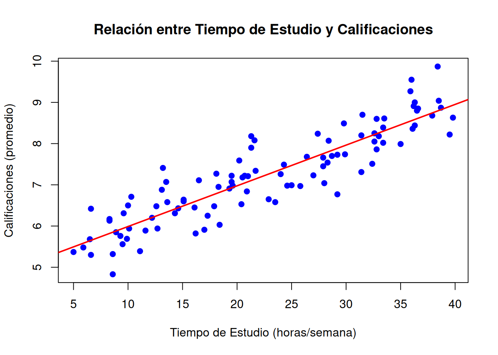

La regresión lineal constituye uno de los pilares fundamentales de la modelización estadística y es ampliamente utilizada en múltiples disciplinas para analizar relaciones entre variables. Este modelo permite explorar cómo una o varias variables explicativas (independientes) influyen sobre una variable respuesta (dependiente), proporcionando no solo descripciones útiles sino también herramientas para la predicción y la inferencia.
El modelo de regresión lineal simple se centra en analizar la relación entre una única variable explicativa y una respuesta, mientras que el modelo de regresión lineal múltiple extiende este concepto al considerar múltiples variables explicativas, permitiendo capturar relaciones más complejas y realistas. Ambos modelos comparten principios fundamentales, como el ajuste de una recta mediante el criterio de mínimos cuadrados y la interpretación de sus parámetros, pero difieren en su alcance y en los retos que presentan.
En este capítulo, abordaremos los fundamentos de la regresión lineal simple, incluyendo sus suposiciones clave, el procedimiento de estimación de parámetros y el uso de herramientas de diagnóstico. A través de ejemplos prácticos, como los estudios clásicos de Galton sobre la herencia de estaturas o el análisis de datos de inversión en publicidad, se ilustrará el poder descriptivo y predictivo de este modelo.
Este tema también prepara las bases para comprender el modelo de regresión lineal múltiple, presentado como una generalización del simple, y para abordar las complejidades adicionales que surgen, como la colinealidad entre variables explicativas y la selección de modelos óptimos.
La comprensión y aplicación correcta de estos modelos es esencial no solo para su utilidad en contextos prácticos, sino también porque representan el punto de partida para técnicas más avanzadas en la ciencia de datos y el aprendizaje automático.
Objetivos
Los siguiente objetivos buscan sentar las bases teóricas y prácticas necesarias para entender y aplicar modelos de regresión, preparando al estudiante para explorar modelos más complejos en los temas posteriores.
Introducción a la Modelización estadística:
Comprender el proceso de modelización estadística, desde la definición de objetivos y variables hasta el ajuste y evaluación del modelo.
Relación lineal y correlación:
Introducir conceptos como la correlación y la relación lineal entre variables.
Analizar cómo identificar y medir la fuerza de la relación entre dos variables.
Comprensión del modelo de regresión lineal simple:
Describir la estructura del modelo de regresión lineal simple y entender su formulación matemática.
Interpretar los parámetros del modelo (intercepto y pendiente) y su significado en un contexto práctico.
Procedimiento de inferencia estadística:
Estimar los coeficientes del modelo mediante el método de mínimos cuadrados.
Realizar inferencias sobre los parámetros, incluyendo contrastes de hipótesis y predicciones.
Diagnóstico del modelo:
Introducir herramientas para diagnosticar la adecuación del modelo ajustado.
Evaluar la validez de los supuestos del modelo, como la linealidad, homocedasticidad e independencia de errores.
Aplicación práctica:
Implementar el modelo en contextos reales, como el análisis de la influencia de inversiones en ganancias o la herencia de características biológicas (ejemplo de Galton).
Visualizar y analizar gráficamente las relaciones para facilitar la interpretación de los resultados.
1.1 Modelización estadística
La modelización estadística es un proceso estructurado que permite analizar y describir relaciones entre variables mediante modelos matemáticos. Este enfoque es fundamental en la estadística aplicada y proporciona herramientas para interpretar datos, realizar predicciones y tomar decisiones fundamentadas. A continuación, se describen los pasos clave de este proceso.
1.1.1 Contextualización del problema
El primer paso en la modelización estadística es definir el problema que se busca analizar. Esto incluye identificar el contexto, establecer objetivos claros y determinar las variables involucradas.
Ejemplo
Problema: Investigar si existe una relación positiva entre el tiempo dedicado al estudio semanal y el promedio de calificaciones de los estudiantes universitarios.
Variables:
Variable explicativa (independiente): Tiempo de estudio semanal (en horas).
Variable respuesta (dependiente): Promedio de calificaciones al final del semestre (en una escala de 0 a 10).
Objetivo: Determinar si los estudiantes que dedican más horas al estudio semanalmente obtienen mejores calificaciones en promedio.
Emplearemos datos simulados para este ejemplo:
# Establecer la semilla para reproducibilidadset.seed(123)# Número de estudiantesn <-100# Generar tiempo de estudio (en horas) como una variable independientetiempo_estudio <-round(runif(n, min =5, max =40), 1)# Relación lineal entre tiempo de estudio y calificaciones (con ruido)beta_0 <-5# Interceptobeta_1 <-0.1# Pendiente (efecto del tiempo de estudio)sigma <-0.5# Varianza del ruidocalificaciones <-round(beta_0 + beta_1 * tiempo_estudio +rnorm(n, mean =0, sd = sigma), 2)# Crear un data frame con los datos generadosdatos <-data.frame(Tiempo_Estudio = tiempo_estudio, Calificaciones = calificaciones)# Visualizar los primeros registroshead(datos)
# Graficar los datosplot(datos$Tiempo_Estudio, datos$Calificaciones,main ="Relación entre Tiempo de Estudio y Calificaciones",xlab ="Tiempo de Estudio (horas/semana)",ylab ="Calificaciones (promedio)",pch =19, col ="blue")abline(lm(Calificaciones ~ Tiempo_Estudio, data = datos), col ="red", lwd =2)

# Ajustar un modelo de regresión linealmodelo <-lm(Calificaciones ~ Tiempo_Estudio, data = datos)summary(modelo)
Call:
lm(formula = Calificaciones ~ Tiempo_Estudio, data = datos)
Residuals:
Min 1Q Median 3Q Max
-1.11465 -0.30262 -0.00942 0.29509 1.10533
Coefficients:
Estimate Std. Error t value Pr(>|t|)
(Intercept) 5.00118 0.11977 41.76 <2e-16 ***
Tiempo_Estudio 0.09875 0.00488 20.23 <2e-16 ***
---
Signif. codes: 0 '***' 0.001 '**' 0.01 '*' 0.05 '.' 0.1 ' ' 1
Residual standard error: 0.4842 on 98 degrees of freedom
Multiple R-squared: 0.8069, Adjusted R-squared: 0.8049
F-statistic: 409.5 on 1 and 98 DF, p-value: < 2.2e-16
1.1.2 Inspección gráfica e identificación de tendencias
Ejercicio
Dejamos como ejercicio para el alumno la interpretación del resultado del test.